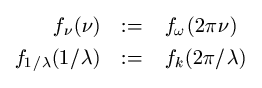
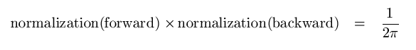
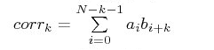
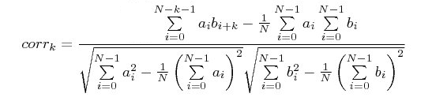

|
|
Project Object
The Project Object offers miscellaneous functions concerning the program in general.
ResetAll
Resets the actual project. All results will be deleted and all internal data structures will be reset to default values. However, the History List and the parameters will not be affected. You may restore the project (except for the results) with the Rebuild Function.
ScreenUpdating ( bool switch )
Switches the update of the results of the main view during the simulation on and off.
SelectQuickStartGuide ( enum {"Transient", "Eigenmode", "Frequency Domain"} type )
SelectQuickStartGuide ( enum {"Electrostatic", "Magnetostatic", "Stationary Current", "Low Frequency", "Particle Tracking"} type )
SelectQuickStartGuide ( enum {"Electrostatic", "Magnetostatic", "Particle Tracking"} type )
Sets the kind of QuickStartGuide.
SelectTreeItem ( string itemname ) bool
Selects the tree Item, specified by name. The main view will be updated according to the selection. A tree Item that is not the root Item may be specified by the full path. The return value is True if the selection was successful.
Example: SelectTreeItem ("Components\component1\solid1")
GetNumberOfSelectedTreeItems long
Returns the number of tree items which are currently selected.
GetSelectedTreeItem string
Returns the path name of the currently selected tree item or folder with regard to the root of the tree.
Example: If a solid named "solid1" is selected in the "component1" folder of the "Components" folder, the returned path name will be "Components\component1\sold1".
GetNextSelectedTreeItem string
Returns the path name of the next selected tree item or folder if multiple items are selected. You need to use GetSelectedTreeItem once before using this command.
Example: If a solid named "solid1" is selected in the "component1" folder of the "Components" folder, the returned path name will be "Components\component1\sold1".
SetLock ( bool switch )
Disables the interaction. No user actions can be made. After a VBA-Script has been executed, SetLock is automatically reset to False.
AddToHistory ( string caption, string contents ) bool
Adds a new entry to the history list entitled caption. The contents of the entry is stored in contents. This contents is executed through the VBA interpreter if this method is called. Therefore it must contain valid VBA commands. If the new entry could be created and the contents could be executed AddToHistory returns True, otherwise False.
If the previous history block has the same caption, it is assumed that it has the same content, it will be removed, in order to keep the history slim.
GetDataBaseValue ( string key ) string
GetDataBaseArrayValue ( string key, long index ) string
Provide access to the settings database. Returnes the data base value specified by key as a string.
ChangeSolverType ( string type)
Switch to another solver. Valid solver types are: "HF Time Domain", "HF Eigenmode", "HF Frequency Domain", "HF IntegralEq", "HF Multilayer", "HF Asymptotic", "LF EStatic", "LF MStatic", "LF Stationary Current", "LF Frequency Domain", "LF Time Domain (MQS)", "PT Tracking", "PT Wakefields", "PT PIC", "Thermal Steady State", "Thermal Transient", "Mechanics".
GetSolverType ( ) string
Returns the currently active solver type as a string.
RunSolver() bool
Start the currently active solver.
ImportSubProject ( string filename, string do_wcs_alignment ) string
This function performs a subproject import and adds the command into the history. filename is the name of the project which will be imported. And with do_wcs_alignment it can be specified if the sub project will be imported into the currently active WCS. If an error occurs during the import, the error message will be returned.
Backup ( filename filename )
Creates a copy of the actual project and its results. The current project is not affected. 'filename' is the name of the copy.
FileNew
Resets the entire program. A new unnamed project will be opened.
Quit
Closes the program without saving unless the structure of the project has been changed.
Save
Saves the current state of the project, including all results obtained so far.
SaveAs ( filename filename, bool include_results )
Saves the current state of the project, including all results obtained so far (optional with 'include_results''). 'filename' is the name of the project to be opened.
StoreInArchive ( filename filename, bool keepAllResults, bool keep1DResults, bool keepFarfieldData, bool deleteProjFolder )
Stores a project in a zip-file with the specified settings. You have the choice to include different sets of files. Either you include all calculated results ('keepAllResults'') or you can keep the calculated 1D results ('keep1DResults'') and/or the calculated farfield data ('keepFarfieldData'). 'filename' is the name of the project to be archived as well as the destination of the zip-file. The last option is to delete the project folder. Note that the project folder has to be deleted if none of the result/data files are included.
DeleteParameter ( string name )
Deletes an existing parameter with the specified name.
DoesParameterExist ( string name ) bool
Returns if a parameter with the given name exists.
GetNumberOfParameters long
Returns the number of parameters defined so far.
GetParameterName ( long index ) string
Returns the name of the parameter referenced by the given index. The first parameter is reference by the index 0.
GetParameterNValue ( long index ) double
Returns the value of the double parameter referenced by the given index. The first parameter is referenced by the index 0.
GetParameterSValue ( long index ) string
Returns the numerical expression for the parameter referenced by the given index. The first parameter is referenced by the index 0.
RenameParameter ( string oldName, string newName )
Change the name of existing parameter 'oldName' to 'newName'.
RestoreParameter ( string name ) string
Gets the value of the specified string parameter.
RestoreDoubleParameter ( string name ) double
Gets the value of a specified double parameter.
RestoreParameterExpression ( string name ) string
Gets the numerical expression for the specified string parameter.
StoreParameterWithDescription ( string name, string value, string description )
Creates a new string parameter or changes an existing one, with the specified string value and the description.
StoreParameter ( string name, string value )
Creates a new string parameter or changes an existing one, with the specified string value.
StoreParameters ( string_array names, string_array values )
Adds or modifies an arbitrary number of parameters in one go. For bulk changes of many parameters this method can be considerably faster than changing parameters one after another in a loop.
The parameters are allowed to arbitrarily depend on each other or on other already existing parameters.
Example:
Dim names(1 To 2) As String, values(1 To 2) As String
names(1) = "a"
names(2) = "b"
values(1) = "5*b"
values(2) = "2"
StoreParameters(names, values)
StoreDoubleParameter ( string name, double value )
Creates a new double parameter or changes an existing one, with the specified double value.
MakeSureParameterExists ( string name, string value )
Makes sure that the parameter name is available. If it is already defined it is left unchanged. If there is no parameter name, it is created with the specified value.
You need to apply quotes to use a new parameter inside the same history block and the CDbl method to assign it to a local Double variable:
MakeSureParameterExists("a","2")
Dim dd As Double
dd = CDbl("a")
SetParameterDescription ( string name, string description )
Defines the description for a given parameter, which is specified by its name.
GetParameterDescription ( string name ) string
Returns the description of a given parameter, which is specified by its name.
GetParameterCombination ( string resultID, variant parameterNames, variant parameterValues ) bool
Fills the variant 'parameterValues' with an array of double values that correspond to the parameter combination 'resultID' . The variant 'parameterNames' is filled with an array containing the parameter names. In case the parameter combination does not exist, the variants will not be modified and the method will return false. The string 'resultID' corresponds to an existing Run ID and is of the format "3D:RunID:1". Existing Result IDs can be queried using the command GetResultIDsFromTreeItem of the ResultTree-object. The method returns an error for Result IDs of invalid format. The following example prints parameter names and parameter values to the message window:
Dim names As Variant, values As Variant, exists As Boolean
exists = GetParameterCombination( "3D:RunID:1", names, values )
If Not exists Then
ReportInformationToWindow( "Parameter combination does not exist." )
Else
Dim N As Long
For N = 0 To UBound( values )
ReportInformationToWindow( names( N ) + ": " + CStr( values( N ) ) )
Next
End If
GetProjectParameters( string filename, variant names, variant expressions, variant values, variant descriptions ) long
Reads parameters from project 'filename' and returns the number of parameters. This is intended to be used for closed projects: The parameters are read from disk. Use the methods described above (GetParameterName etc) to access parameters of open projects. The parameters are returned as follows:
|
names |
string array of parameter names |
|
expressions |
string array of parameter expressions |
|
values |
double array of parameter values |
|
descriptions |
string array of parameter descriptions |
ClearGlobalDataValues
Clear all global data values.
DeleteGlobalDataValue ( string name )
Delete a global data value with a given name.
RestoreGlobalDataValue ( string name ) string
Returnes a global data value with a given name.
StoreGlobalDataValue ( string name, string value )
Creates a new global data value with a given name and value or changes an existing one.
The global data storage can be used to store named settings in projects.
Caution: It is very easy to use the global data storage in a way that introduces very hard to find result inconsistencies. It is strongly advised to be used by experienced users only. If possible, project parameters should be used instead.
The global data storage has the following properties:
It is shared between simulation projects and master projects, i.e. a setting stored in a simulation project will be visible in the master and other simulation projects. This is even true for simulation projects with disabled "Link geometry to master" flag.
Names and values of settings can be arbitrary strings, but line breaks are forbidden.
The standard dependency and result invalidation mechanisms of project parameters are not applied to the global data storage. Changing a value that is used in the history list of 3D projects or in a block or task setting on the schematic does neither prompt for a history rebuild, nor does it cause an invalidation of task results, the assembly or simulation projects. The user of the global data storage is responsible for any re-calculations and/or history rebuilds which might be needed.
Global Data storage settings must not be used in value expressions of project parameters. This would break the parametric result management.
When opening an existing project that uses GetGlobalData, it is impossible to tell whether the current state (3D geometry, task settings, block settings, results etc.) was obtained with the current result of GetGlobalData. The only way to find this out is to rebuild all 3D blocks and to run all 3D solvers and simulation tasks again.
ResetGlobalDataStorage
Clear all global data storage settings.
SetGlobalData ( string name, string value )
Creates a new global data storage setting with a given name and value or changes an existing one. For storing floating point numbers it is recommended to use an explicit conversion first to double and then to string to avoid errors caused by locale dependent decimal separators:
SetGlobalData(name, CStr(Cdbl(value)))
GetGlobalData ( string name ) string
Returns a global data storage setting.
Mathematical Functions / Constants
Returns the arc cosine of the input parameter as a radian value.
Returns the arc cosine of the input parameter in degree.
Returns the arc sine of the input parameter as a radian value.
Returns the arc sine of the input parameter in degree.
Returns the arc tangent of the input parameter in degree.
ATn2 ( double value1, double value2 ) double
Returns the arc tangent of the relation of value1 to value2 as a radian value.
|
value1 |
Numerator of the arc tangent calculation. |
|
value2 |
Denominator of the arc tangent calculation. |
ATn2D ( double value1, double value2 ) double
Returns the arc tangent of the relation of value1 to value2 in degree.
|
value1 |
Numerator of the arc tangent calculation. |
|
value2 |
Denominator of the arc tangent calculation. |
CLight double
Returns the constant value for the speed of light in vacuum.
Returns the cosine of the input parameter in degree.
Eps0 double
Returns the constant value for the permittivity of vacuum.
Evaluate ( string expression ) double
Evaluates and returns the numerical double result of a string expression.
im ( double amplitude, double phase ) double
Calculates the imaginary part of a complex number defined by its amplitude and phase.
Mu0 double
Returns the constant value for the permeability of vacuum.
Pi double
Returns the constant value of Pi.
re ( double amplitude, double phase ) double
Calculates the real part of a complex number defined by its amplitude and phase.
Returns the sine of the input parameter in degree.
Returns the tangent of the input parameter in degree.
FMod ( double value1, double value2 ) double
Returns the floating point remainder of value1 divided by value2.
ActivateScriptSettings ( bool switch )
This method activates (switch = "True") or deactivates (switch = "False") the script settings of a customized result item.
ClearScriptSettings
This method clears the internal settings of a previously customized result item.
GetLast0DResult ( string name ) double
This method returns the last 0D result of the selected result template. 'name' is the name of a previously defined result template.
GetLast1DResult ( string name ) Result1D
This method returns the last 1D result of the selected result template. 'name' is the name of a previously defined result template.
GetLast1DComplexResult ( string name ) Result1DComplex
This method returns the last complex 1D result of the selected result template. 'name' is the name of a previously defined result template.
GetLastResultID string
This method returns the Result ID which identifies the last result. It allows access to the last 1D or 0D result via Resulttree.GetResultFromTreeItem, e.g.:
Dim o As Object
Set o = Resulttree.GetResultFromTreeItem("1D Results\S-Parameters\S1,1", GetLastResultID())
ReportInformationToWindow("Last 1D/0D result object type: " + o.GetResultObjectType())
GetScriptSetting ( string name, string default_value ) string
This function is only active if a result template is currently in process. It returns the internal settings of the previously customized result item using the StoreScriptSetting method. In case that no settings has been stored, the default value will be returned.
StoreScriptSetting ( string name, string value )
This function is only active if a result template is currently in process. It offers the possibility to customize the corresponding result item with help of internal settings, which can be recalled using the GetScriptSetting function. 'name' is the name defining the internal setting. 'value' is the value of the setting.
StoreTemplateSetting ( string setting, string value )
This function is only active if a result template is processed. It defines the type of the template and needs to be set in the define method of every result template. The variable 'setting' has to be the string "TemplateType". The variable 'value' can be"0D", "1D", "1DC", "M0D", "M1D" or "M1DC". The choice of the template type determines which evaluation method of the template is called when being processed and what return type is expected. More details can be found on the Post-Processing Template Layout help page.
GetScriptFileName string
Returns the file name of the currently active script.
EvaluateResultTemplates
Evaluates all existing result templates. As well as after a solverrun or pushing 'Evaluate All' in Template Base Post-Processing dialog.
SetApplicationName ( string name )
Sets the application name ("EMS", "PS", "MWS", "MS", "DS for MWS", "DS for PCBS", "DS for CS", "DS for MS", "DS"). Use this function for developing a result template.
ResetApplicationName
Reset the application name to the default name. Use this function for developing a result template.
ResetTemplateIterator
Resets the template iterator to the beginning of the list of defined result templates and clears all template filters.
SetTemplateFilter( string filtername, string value)
Sets a filter for the template iterator which iterates over the list of defined result templates. Allowed values for 'filtername' are "resultname", "type", "templatename" and "folder". If 'filtername' is set to 'type' , then 'value' can be "0D", "1D", "1DC", "M0D", "M1D", or "M1DC". For all other filternames, 'value' can be an arbitrary string.
GetNextTemplate( string resultname, string type, string templatename, string folder) bool
Fills the parameter variables with the data of the next template of the list of defined result templates. The variable "resultname" will be filled with the result name of the defined template, e.g. "S11". The variable "type" will be filled with the type of the current result template and can be "0D", "1D", "1DC", "M0D", "M1D" or "M1DC". The variable "templatename" will be filled with the name of the template definition file, e.g. "S-Parameter (1D)". The variable "folder" will be filled with the relative folder where the template definition file is located (e.g. "Farfield and Antenna Properties"). If a filter was defined (see SetTemplateFilter) the method only returns the data of templates that match the filter. If the end of the template list is reached or no more templates are present that meet the defined filter, the method returns false. The method requires ResetTemplateIterator to be called in advance.
The following example shows all defined 0D Templates:
Dim Resultname As String, Templatetype As String, Templatename As String, Folder As String
ResetTemplateIterator
SetTemplateFilter("type","0D")
While (GetNextTemplate( Resultname, Templatetype, Templatename, Folder) = True)
MsgBox(Resultname & vbNewLine & Templatetype & vbNewLine & Templatename & vbNewLine & Folder)
Wend
GetFileType( string filename ) string
Checks the file type of the file with absolute path specified in the variable 'filename'. If the file is a complex signal file, the string "complex" will be returned. If the file is a real-valued signal file, the string "real" will be returned. If the file is a real-valued 0D file, the string "real0D" will be returned. If the file is a complex-valued 0D file, the string "complex0D" will be returned. If the file type is unknown or the file can not be found, "unknown" will be returned.
GetImpedanceFromTreeItem( string treename ) Result1DComplex
If the 1D tree item with the name 'treename' can be visualized as a Smith Chart, this method returns a Result1DComplex object filled with the corresponding impedance data. If no impedance data is available, this method returns an empty Result1DComplex object.
GetFirstTableResult( string resultname ) string
Returns the name of the table that was created on evaluation of the template with the name 'resultname' or an empty string.
GetNextTableResult( string resultname ) string
If the template created more than one table on evaluation, this method returns the names of next table that was created on evaluation of the template with the name 'resultname'. If no more table names are available, this method returns an empty string. Please note that GetFirstTableName needs to be called before and that this method needs to be called with the same value for parameter 'resultname'.
GetTemplateAborted bool
Returns true if the user aborted the template based post-processing evaluation, otherwise false.
GetMacroPath string
Returns the first directory, that has been set as location for globally defined macros. This function is the same as "GetMacroPathFromIndex(0)"
GetMacroPathFromIndex ( long index ) string
Returns the name of the macro path referenced by the given index. The first macro path is reference by the index 0.
GetNumberOfMacroPaths int
Returns the number of defined macro directories.
RunAndWait ( string command )
Executes a 'command' and waits with the execution of the current VBA-Script until 'command' has finished. The VBA-command shell in contrast, executes a command in a second thread such that the execution of the script continues. 'command' is the command to be executed. For instance every properly installed program on the current computer can be started.
RunMacro ( string macroname )
Starts the execution of a macro.
RunScript ( string scriptname )
Reads the script input of a file.
ReportInformation ( string message )
Reports the information text message to the user. The text will be written either into the output window (if a solver is currently running) or into a message dialog box.
ReportWarning ( string message )
Reports the warning text message to the user. The text will be written either into the output window (if a solver is currently running) or into a message dialog box.
ReportInformationToWindow ( string message )
Reports the information text message to the user. The text will be written into the output window.
ReportWarningToWindow ( string message )
Reports the warning text message to the user. The text will be written into the output window.
ReportError ( string message )
Reports the error text message to the user. The text will be written into a message dialog box. The currently active VBA command evaluation will be stopped immediately. An On Error Goto statement will be able to catch this error.
SetCommonMPIClusterConfig ( string install_folder, string temp_folder, string architecture)
Set global and common information relative to all machines in MPI cluster. It is necessary to specify, in order:
• the CST Microwave Studio installation folder. This can be a local or network path.
This latter option enables executable depot to be maintained updated and homogeneous.
• the temporary folder, for data storing on remote machines.
• the machines architecture and Operating System (OS). This field should belong to the following set:
enum {"Windows IA32", " Windows AMD64", " Linux IA32”, ”r;Linux AMD64”} type
SetCommonMPIClusterLoginInfo ( string login_user, string login_private_key_file)
Set global and common information relative to the MPI mechanism starting a Linux cluster from a Windows frontend. To enable a password less access the Linux login mechanism actually requires:
• the user name which will be used as login to the Linux cluster.
• the user private key file location. The file may be a local one or network one stored on a location shared by all cluster machines.
GetMPIClusterSize long
Return the number of machine defined in the MPI cluster.
ClearMPIClusterConfig
Reset all entries for the machine definition in the MPI cluster.
AddMPIClusterNodeConfig ( string host_name, string install_folder, string temp_folder, string architecture, bool active)
Add a new machine to MPI cluster, setting all its relevant properties:
• the CST Microwave Studio installation folder. This can be a local or network path. If left empty, default installation folder setting is employed.
• the temporary folder, for data storing on remote machines. If left empty, default temporary folder setting is employed.
• the machines architecture and Operating System (OS). This field may belong to the following set:
enum {"Windows IA32", " Windows AMD64", " Linux IA32”, ” Linux AMD64”} type
If left empty, default architecture setting is employed.
• an activation flag to enable or disable the computation on the machine.
Example
The typical usage of these functions is in the initialization of a cluster of machines, to be used in solver MPI parallelization mode.
The following example shows the configuration of 2 nodes:
' Remove previous cluster definition
ClearMPIClusterConfig
' Set default parameters
SetCommonMPIClusterConfig(”r;C:\program files\MWS 2009”,”e:\temp\mpi”,”Windows IA32”)
' Add active nodes (with default parameter)
AddMPIClusterNodeConfig (”r;Mynode1”,””,””,””,true)
' Add second node specializing parameter
AddMPIClusterNodeConfig (”r;Mynode2”,”C:\programme\MWS 2009”,”f:\mpi”,”Windows IA32”,true)
' Enable solver MPI computation
Solver.MPIParallelization(true)
ImportXYCurveFromASCIIFile ( string folder_name, string file_name )
Imports the data of the file "fileName" to the folder "folderName"
PasteCurvesFromASCIIFile ( string folder_name, string file_name )
Pastes the data of the ASCII-file "fileName" to the folder "folderName"
PasteCurvesFromClipboard ( string folder_name )
Pastes the clipboard contents to the folder "folderName".
ScaleCurves ( string folder_name, double xScale, double yScale )
Scales the x and y data rows of all 1D plot data located in the specified folder "folder_name" of the Navigation Tree and in all its subfolders. 'folder_name' is a path or folder in the Navigation Tree. 'xScale'/'yScale' is the value multiplied with each sample of the x/y data row.
StoreCurvesInASCIIFile ( string file_name )
Stores the selected 1D or 2D plot in the specified filename as ASCII data.
StoreCurvesInClipboard
Stores the selected 1D or 2D plot in the clipboard.
CalculateFourierComplex ( Result1DComplex Input, string InputUnit, Result1DComplex Output, string OutputUnit, int isign, double normalization, double vMin, double vMax, int vSamples )
This VBA command computes the integral:

f(u) represents an arbitrarily sampled input signal Input. The meaning of u and v abscissas depends on the values specified via InputUnit and OutputUnit. Allowed values and the corresponding project units are:
|
Unit string value |
Unit |
|
"time" |
TIME UNIT |
|
"frequency" |
FREQUENCY UNIT |
|
"angularfrequency" |
RADIAN x FREQUENCY UNIT |
|
"space" |
LENGTH UNIT |
|
"wavenumber" |
1/LENGTH UNIT |
|
"angularwavenumber" |
RADIAN/LENGTH UNIT |
vMin and vMax speficy the desired data interval in transformed coordinates and vSamples defines the desired number of equidistant samples. Only time-frequency and space-wavenumber space transforms are supported. Frequency and wavenumber functions are related as follows to their angular frequency/wavenumber counterparts:

No further scaling is applied. isign controls the sign of the exponent to affect a forward or a backward transform. The argument normalization may assume any value, depending on the employed normalization convention. However, forward and backward transform normalizations must always guarantee:

Fourier transform conventions adopted by CST Microwave Studio® are:
CalculateFourierComplex(Signal, "time", Spectrum, "frequency", "-1", "1.0", ...)
CalculateFourierComplex(Spectrum, "frequency", Signal, "time", "+1", "1.0/(2.0*Pi)", ...)
CalculateCONV ( Result1D a, Result1D b, Result1D conv )
This method calculates the convolution of two sequences. All signals are given as Result1D objects.
|
a |
First sequence to be convoluted. |
|
b |
Second sequence to be convoluted. |
|
conv |
Convolution of sequence_a and sequence_b |
CalculateCROSSCOR ( Result1D a, Result1D b, Result1D corr, bool bNorm )
This method calculates the cross correlation sequence of two sequences. All signals are given as Result1D objects. If "bNorm" is "False" then the standard cross correlation sequence is calculated by the following equation.

For "bNorm = True" a normed correlation sequence is determined. The resulting sequence will have values in the interval [-1,1] and will be independent to scalar multiplication of the sequences "a" and "b". This normed sequence is derived from the term below.

Please note that "corr" may have a different sampling than "a" and "b". An internal resampling is done to assure compatibility of the x-values of the processed sequences.
|
a |
First sequence to be correlated. |
|
b |
Second sequence to be correlated. |
|
corr |
Sequence of correlation coefficients of the sequences above. |
|
bNorm |
Flag if normed or standard correlation is calculated. |
ApplyWindow ( Result1D timeSignal, string windowType, string startTime, string stopTime) Result1D
This method performs a windowing on an input time signal "timeSignal". The windowed signal is returned as a Result1D object. By appropriate windowing, undesired spectral leakage effects, that overlay the true output spectrum can be reduced. For more information on theoretical aspects of windowing please refer to From Time Domain To Frequency Domain.
"windowType" specifies the type of windowing function, applied on the input signal. The following window types are supported: "Uniform", "Bartlett", "Hanning", "Hamming", "KaiserBessel", "Blackman", "FlatTop", and "Gaussian". The spectral properties of these window types are summarized in the following table:
|
Uniform window |
Characterized by a narrow main lobe but large side lobes. Use this if a good frequency resolution is important and spectral leakage is not so critical. |
|
Bartlett window |
The Bartlett window can be interpreted as a convolution between uniform windows. It still suffers high side lobes and strong spectral leakage but not as extreme as for the uniform window. The main lobe is broader and the frequency resolution is not as good as for the uniform window. |
|
Hanning window |
Spectral properties (main lobe width, side lobe levels, sampling amplitude error) are well balanced. This results in a good general-purpose window that is often appropriate. |
|
Hamming window |
The Hamming window is similar to the Hanning windows. The window coefficients are a bit different and have been optimized to suppress the first side lobe. Because of that the Hamming window is useful to resolve multitone signals where two tones are closely spaced. On the downside, the window does not taper down to zero at the edges, resulting in some small contribution to spectral leakage due to window edge effects if the time signal is not truely periodic. |
|
Kaiser-Bessel window |
Optimized for very low side lobes at the cost of a wider main lobe. Use this for well-separated multitone signals with high dynamic range. |
|
Blackman window |
Characterized by very low sidelobe levels, similar as for the Kaiser-Bessel window. The frequency resolution is slightly better than for the Kaiser-Bessel window. In summary, the spectral properties of the Blackman and the Kaiser-Bessel window are quite comparable. |
|
Flat-Top window |
Optimized for a very low amplitude error but with a relatively wide main lobe resulting in poor frequency resolution. Also used by spectrum analyzers for measuring single amplitudes. Use this if amplitude accuracy is important and tones are not too close in multitone signals. |
|
Gaussian window |
The Gaussian window is characterized by a Gaussian bell curve in both, time- and frequency domain. It is well confined and without side lobes in both domains. The support of a Gaussian function extends to infinity. It is therefore truncated at the edges of the window at a reasonably low level of -100dB in relation to its maximum. |
"startTime" and "stopTime" define the lower and upper bound of a subinterval of the input signal's abscissa, on which the windowing is performed. This allows for a convenient scaling of the windowed signal in frequency domain. Outside the interval ["startTime", "stopTime"] the windowed signal is identically zero.
For all windowing functions coherent power gain compensation is applied. I.e., the windowing functions are normalized such that in frequency domain their main lobe has an amplitude of one. Otherwise the tapering-off of the window function towards the window edges would appear as the so-called coherent power gain which is actually a loss.
DeleteResults
Deletes all results of the actual project.
GetFieldFrequency double
Returns the frequency of the currently plotted field. If no field is plotted, zero will be returned.
GetFieldPlotMaximumPos ( double_ref x, double_ref y, double_ref z ) double
GetFieldPlotMinimumPos( double_ref x, double_ref y, double_ref z ) double
Returns the maximum / minimum of the color scale and its global position of a plot without considering the manual setting of the borders. 'x', 'y', 'z' are the absolute coordinate of the maximum / minimum as return values.
GetFieldVector ( double x, double y, double z, double_ref vxre, double_ref vyre, double_ref vzre, double_ref vxim, double_ref vyim, double_ref vzim ) bool
Returns the complex vector field value of the currently active field plot at the given position. If the field is scalar, only the vxre component has non-zero values. If no field plot is active or the given position is out of range the function returns false.
|
x |
X - value of the position of the desired field value. |
|
y |
Y - value of the position of the desired field value. |
|
z |
Z - value of the position of the desired field value. |
|
vxre |
Real part of the x-component of the field value. |
|
vyre |
Real part of the y-component of the field value. |
|
vzre |
Real part of the z-component of the field value. |
|
vxim |
Imaginary part of the x-component of the field value. |
|
vyim |
Imaginary part of the y-component of the field value. |
|
vzim |
Imaginary part of the z-component of the field value. |
ClearGeometryDataCache
Deletes the geometry data cache that has been built up by GetFieldVector.
GetMaxVectorLength ( double vxre, double vxim, double vyre, double vyim, double vzre, double vzim ) double
GetMinVectorLength ( double vxre, double vxim, double vyre, double vyim, double vzre, double vzim ) double
Returns the maximum / minimum absolute value of a three dimensional vector. 'vxre', 'vxim', 'very', 'vyim', 'vzre', 'vzim' are the real and imaginary part the vector's components.
GetApplicationName string
Returns the application name.
GetApplicationVersion string
Returns the current version number as a string.
GetInstallPath string
Returns the path where the program is installed.
GetProjectPath ( string type ) string
Gets the project path. If the name of the current project is Try and its location is in c:\MySolvedProblems, the result of this function will be
|
type |
Path returned |
|
Root |
c:\MySolvedProblems |
|
Project |
c:\MySolvedProblems\Try |
|
Model3D |
c:\MySolvedProblems\Try\Model\3D |
|
ModelCache |
c:\MySolvedProblems\Try\ModelCache |
|
Result |
c:\MySolvedProblems\Try\Result |
|
Temp |
c:\MySolvedProblems\Try\Temp |
GetOwnProject object
Returns the COM interface of the current project.
GetSimulationProject ( string name ) object
Returns the COM interface of the simulation project.
GetParentOfSimulationProject ( ) object
Returns the COM interface of the parent project if the current project is a simulation project.
IsBuildingModel bool
Encounters whether the history list is currently processing or not
GetLicenseHostId string
Gets the host id for the currently used license (hardlock). This information may be useful for support purposes.
GetLicenseCustomerNumber string
Gets the current customer number from the license. This information may be useful for support purposes.
Assign ( string variable_name )
This function can be used only in connection with the BeginHide/EndHide Functions. 'variable_name' is a variable, defined within a BeginHide/EndHide block, that has to be valid outside of this block.
BeginHide
These function has an effect only if they are used in connection with the History List .
EndHide
These function has an effect only if they are used in connection with the History List .
dist2d ( int id, double x, double y ) double
Returns the spatial distance in 2d of a pickpoint to a specified position.
|
id |
Number of the requested point in the pickpoint list. |
|
x |
x-coordinate of the specific position. |
|
y |
y-coordinate of the specific position. |
dist3d ( int id, double x, double y, double z ) double
Returns the spatial distance in 3d of a pickpoint to a specified position.
|
id |
Number of the requested point in the pickpoint list. |
|
x |
x-coordinate of the specific position. |
|
y |
y-coordinate of the specific position. |
|
z |
z-coordinate of the specific position. |
ldist2D ( int id, double x1, double y1, double x2, double y2 ) double
Returns the spatial distance in 2d of a pickpoint to a line defined by two points.
|
id |
Number of the requested point in the pickpoint list. |
|
x1 |
x-coordinate of the start point of the specific line. |
|
y1 |
y-coordinate of the start point of the specific line. |
|
x2 |
x-coordinate of the end point of the specific line. |
|
y2 |
y-coordinate of the end point of the specific line. |
Rebuild bool
Recreates the structure by processing the History List . All results will be deleted.
Returns True if the rebuild was successful.
RebuildOnParametricChange (bool bfullRebuild, bool bShowErrorMsgBox) bool
Updates the structure after parametric changes have been made by processing the History List. Results which should survive parametric changes will be kept, all other results will be deleted.
If bfullRebuild is True the complete history list is processed instead of only those blocks which are affected by the parametric change. If bShowErrorMsgBox is set False no message box is shown in case of an error.
Returns True if the rebuild was successful.
xp / yp / zp ( int id ) double
Returns the x / y / z-coordinate of a specified pickpoint defined by it's number in the pickpoint list.
Plot3DPlotsOn2DPlane ( bool switch )
Plots a 3D field on a 2D plane if 'switch' is True.
ResultNavigatorRequest ( string request, string parameter ) string
Sends modification requests or queries to the Result Navigator. Allowed strings for request are "set selection", "get selection", "reset selection". The expected format of the string parameter and the return value of the function depend on the request. The function requires a preselected 1D or 0D result in the Navigation Tree, which can be achieved by a preceding call of SelectTreeItem. If no 1D Plot is selected, the method will return an error.
The request "set selection" allows modifying the selection state of the Result Navigator and expects parameter to be a string containing a whitespace separated list of non-negative integers which correspond to Run IDs to be selected. The return value of the function will be an empty string. The following example shows how to select and plot parametric s-parameters from the Navigation Tree:
SelectTreeItem("1D Results\S-Parameters")
Dim selection As String
selection = Join(Array(0,1,5)) 'selection = "0 1 5"
ResultNavigatorRequest("set selection",selection)
The request "get selection" queries the current selection state of the Result Navigator and returns a string containing a whitespace separated list of integers which correspond to the selected Run IDs. The variable parameter is ignored. The following example shows how to query the selected parametric results and print the selection to the message window:
SelectTreeItem("1D Results\S-Parameters")
ReportInformationToWindow( ResultNavigatorRequest("get selection","") )'print current selection to message window
The request "reset selection" resets the selection state of the Result Navigator to default behavior (similar to "Reset Selection" in the context menu). The variable parameter is ignored and the return value of the function will be an empty string. The following example shows how to reset the selection in the Result Navigator:
SelectTreeItem("1D Results\S-Parameters")
ResultNavigatorRequest("reset selection","") 'reset Result Navigator selection state to default behavior
SetPlotStyleForTreeItem( string treepath, string settings )
This command allows modifying plot styles of 1D curves such as curve color, line style, etc. The modifications behave like modifications which are done in the Curve Style Dialog. It is not required to have any open 1D Plot to use this command. However, existing open 1D Plots will not be updated automatically; consider using the Plot1D object in this case. The parameter treepath is expected to be a navigation tree path to a 1D leaf item, that is a tree item which represents a single curve, e.g. "1D Results\S-Parameters\S1,1". If the tree item does not exist or is a folder, an error is reported. This check can be deactivated (see parameter settings ).
The parameter settings is expected to be a whitespace separated list of the following strings:
|
Keyword |
Setting |
Example |
|
nocheck |
Disables the existence check for the provided tree path. This allows modifying plot styles a priori to a solver run. |
|
|
runid=... |
Allows controlling the plot styles of a parametric curve. If no runid is provided, runid=0 is assumed. No existence check is done. |
runid=0 |
|
color=... |
Specifies the desired curve color in semicolon separated list of RGB values in the range [0,255]. |
color=255;255;0 |
|
linewidth=... |
Accepts an integer in the range [1,8] and specifies the line thickness. |
linewidth=3 |
|
linetype=... |
Can be used to specify the line style, which can be one of the options "Solid", "Dashed", "Dotted", "Dashdotted". |
linetype=Solid |
|
markerstyle=... |
Can be used to specify the marker style, which can be one of the options "Auto", "Additional", "Marksonly", "Nomarks". |
markershape=Auto |
|
markersize=... |
Accepts an integer in the range [1,8] and specifies the marker size. |
markersize=5 |
|
clear |
Removes all configured plot styles and sets it back to default values. |
|
The following example shows how a plot style can be modified:
SetPlotStyleForTreeItem("1D Results\S-Parameters\S1,1","color=177;1;165 linetype=Dotted linewidth=8")
More VBA methods related to the view are available in Plot, Plot1D, Plot2D3D.
ExportImageToFile( string name, int width, int height)
Creates a screenshot with the specified size of the current active plot and stores it in the given file. The string filename is expected to be an absolute file path. Supported file formats are bmp and png.
If width and height is set to zero the current window size is used.
Examples:
ExportImageToFile ("D:\image.bmp", 1024, 768) 'exports screenshot to D:\image.bmp with resolution 1024x768.
ExportImageToFile ("D:\image.png", 0, 0) 'exports screenshot to D:\image.png with the current window size.
ExportImageToClipboard( string name, int width, int height)
Creates a screenshot with the specified size of the current active plot and copies it to clipboard. If width and height is set to zero the current window size is used.
Examples:
ExportImageToClipboard (1024, 768) 'copies screenshot to clipboard with resolution 1024x768.
ExportImageToClipboard (0, 0) 'exports screenshot to clipboard with the current window size.
UseDistributedComputingForParameters (bool flag )
Enables distributed computing for parameter sweep or optimizer runs.
Example: UseDistributedComputingForParameters ("True")
MaxNumberOfDistributedComputingParameters ( int num )
Sets the number of CST DC Solver Servers which should be used in parallel during a distribute parameter sweep / optimizer run. This is also the number of required acceleration tokens.
Example: MaxNumberOfDistributedComputingParameters (4)
UseDistributedComputingMemorySetting ( bool flag )
Enables the lower memory limit for a distributed computing run.
Example: UseDistributedComputingMemorySetting ("True")
MinDistributedComputingMemoryLimit ( int lowerLimit )
Sets the lower limit of required memory for a distributed computing run. A CST DC Solver Server with at least lowerLimit MB available memory will be used for the job.
Example: MinDistributedComputingMemoryLimit (1024)
| CST Studio Suite 2022 |
|